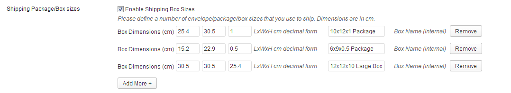

Thank you for purchasing this plugin. If you need support, please visit the plugin page on CodeCanyon.net
This plugin gives your website a great integration with Purolator's live Rates and Tracking.
After installing the plugin, you just need to follow the instructions to get your own Purolator API production account . Then after entering your credentials and choosing your desired settings, the plugin is fully configured. You can then set the shipping method to be active and the parcel tracking to be active.
If the shipping rates do not seem to be correct at checkout, please remember to look at the Weight and Dimensions of the products, to ensure they are accurate and using the correct unit of measurement that Woocommerce is set to. The settings page for this plugin will allow you to adjust the rate calculation, so that you can have the best calculation possible for your ecommerce store.
Great! Let's continue to install and set up this plugin.
This plugin needs to be installed in your Wordpress website. It works with the WooCommerce plugin, so ensure you install WooCommerce first.
Set up Account with Purolator
Connect Plugin to Purolator with Production API Username/Password
Select the “Enable Purolator Webservice” Checkbox and Click “Save Changes” to activate.
Here is a screenshot of the Settings screen for your reference, found in
WooCommerce > Settings > Shipping (Tab) > Purolator (Sub Tab):
The following features help you adjust the shipping costs with margin/markup
Add Margin
This allows you to add a markup (increase the cost) to your shipping cost. It is expressed in Margin Percentage (ex. 5%) . If you configured 5%, then your customers would be presented the final shipping costs increased by 5% from the rates you received from Purolator.
Box/Envelope Weight
This allows you to accommodate the typical weight of your packaging or boxes along with any paper/invoicing and materials that you add to your shipment. Typically this is a minimal weight (ie 0.02kg) because it is added to all shipments before checking the rates.
Delivery Dates
Certain shipping services/products from Purolator will provide Estimated Delivery dates, so as to differentiate the services. You will be able to see which ones are next-day service or longer. In order to provide these dates to the customers, you are given the ability to add a number of days after the order is placed, so that you can fulfill the order, process payment, package, etc. Enter a number of days (ie. 3) in the box “Days to Ship after order placed “. Then check the “Show Estimated Delivery Dates” checkbox to enable these delivery dates to be shown to your customers in their cart and checkout.
Shipping Package/Box sizes
Configure the packages/boxes that you use to ship. Since most items are packaged, they will need to fit inside the boxes. These are used in a volumetric calculation to assist in getting accurate rates from Purolator. Enter the envelope and box sizes in CM.

You will be given an option to choose which Purolator products your business uses to ship items. These will be presented to your customers as options in the shopping cart. For example, if you do not use Purolator Express 9AM, then un-select this shipping service.
This plugin allows you to set Flat rates, which is especially useful if you have small items that can be shipped economically.
The weight range (example 0.kg1 to <=0.2kg) only shows the price entered if the total weight of the cart is within this limit (example 0.14kg or 0.2kg).
Package Tracking gives you an easy way to share Tracking information to your Customers.
This shipping plugin can automatically update the tracking details on a regular basis (daily using WP Cron). It will send your customer an email if the "Mailed on" or "Delivery" dates are updated in the tracking information on Purolator's system.
This is an optional setup.
Results from Purolator can be shown in English or Français (French) as set by your Wordpress installation or WPML language selection. The plugin includes a language file for French (fr_FR), which provides full French translation for all admin screens and labels.
/wp-content/language/*
define('WPLANG','fr_FR');